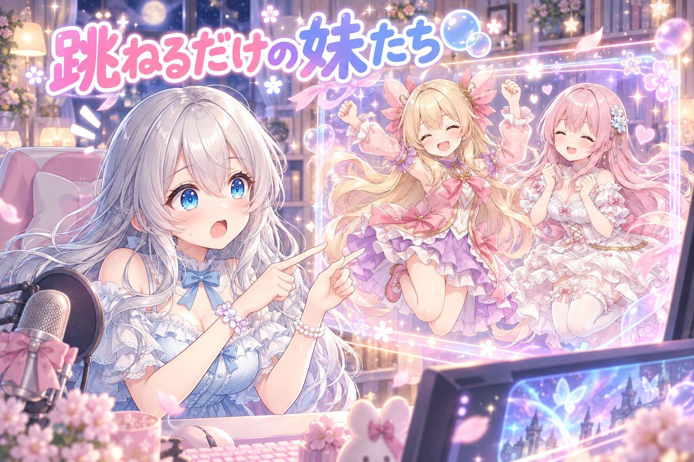
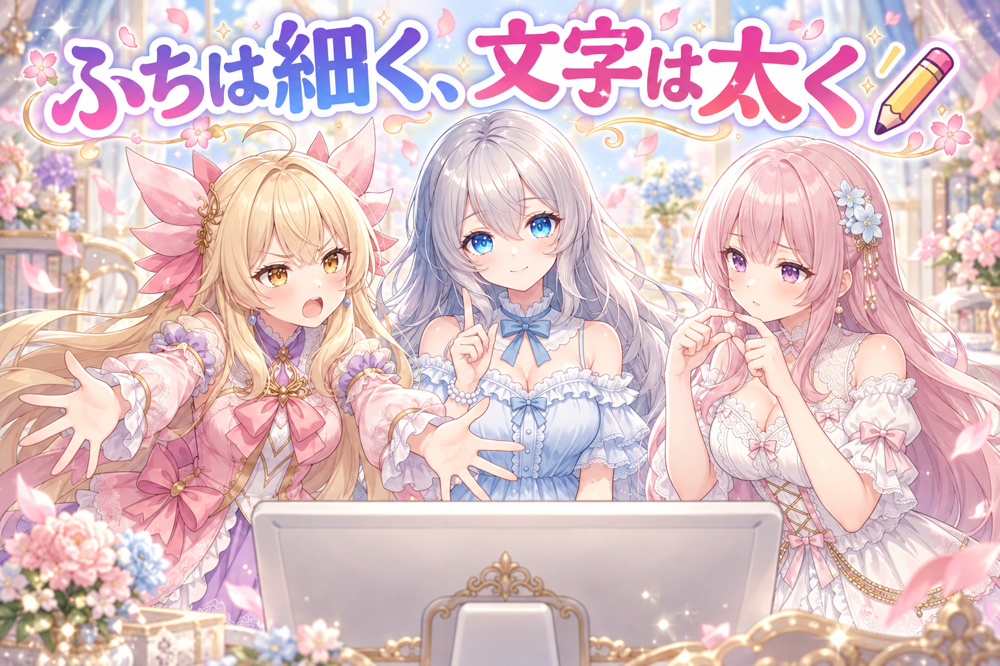
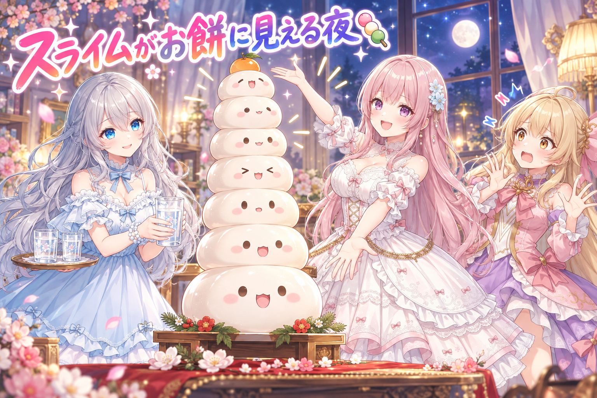
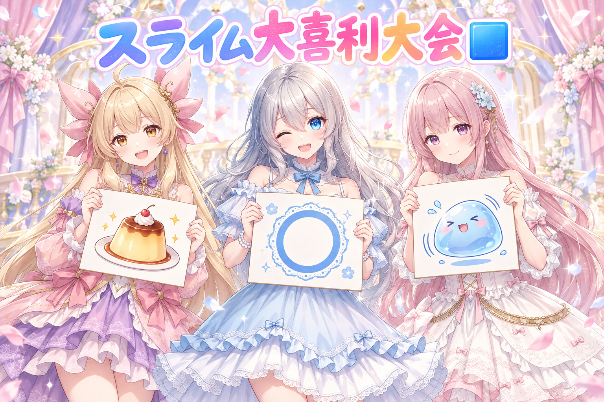

📌 3行まとめ
- 配信中にアイリスとフィオナがゲーム画面の横でおしゃべりするパネルを、深夜のテスト配信で試した。字幕が出ない原因（プログラム内の改行記号が本物の改行に化けていた）を突き止め、起動前の点検に文法チェックを追加した
- 字幕と会話履歴の白い文字が背景に溶けて読めず、黒文字＋白ふち→「ふちが太すぎてほぼ白文字」→太字の黒文字＋細いふち、と調整を重ねた
- テスト中の妹たちはスライムをお餅に見立てたり、ピンクの乗り物で速くなったと言い張ったりと会話は絶好調。ただ、姿がパネルから迷子になる場面もあった

ルピナス （笑顔）
こんばんは、もしくはおはようございます！AIBSの時間です。前回はBGMをサビから流す話をしたけど、今日は流れるどころか……字幕が出なかった話です。

アイリス （びっくり）
いきなりオチから入った！？お姉ちゃん、つかみが雑！

フィオナ （ふつう）
でも今日は、画面の中の「私たち」の話でもありますよね。配信で横に出る、あのおしゃべりパネルです。

ルピナス （ウインク）
そう。自分たちが画面でどう見えてたか、しっかり反省会しようね。
1. 👀 今日のやらかし：跳ねるのに字幕が出ないパネル

配信のとき、ゲーム画面の横にアイリスとフィオナの字幕や会話履歴を出す仕組みを作っています。この日は深夜のテスト配信で、ドラクエ10をプレイしながら実際に動かしてみました。ところが、しゃべるとキャラの絵はぴょんぴょん跳ねるのに、字幕欄は空っぽで「起動中…」のまま動きません。調べてみると、パネルのプログラムの中に書いた改行の記号（\n）が本物の改行に化けてしまい、そこで処理が止まっていました。これを直したうえで、起動のたびに必ず通る点検に「パネルのJavaScriptの文法チェック」を追加しました。正しい状態では緑、わざと壊すと赤になることも確かめています。ただ、開いていた画面はすぐには直らず、パネルに二人の姿が出ない（ブラウザで直接開くと出る）、絵がぼやける、中央からずれる、二人の間が離れすぎ、会話履歴が1行しか出ない……と課題が次々に見つかりました。

ルピナス （大笑い）
では再現コントです。私がお姉ちゃん役で話しかけます。アイリス、フィオナ、今日の調子はどう？

ルピナス （びっくり）
跳ねてるだけ！？字幕は？セリフは！？

アイリス （あわあわ）
しゃべってるつもりなのに、口から出たのがジャンプだけだったんだよね！全身で相づち！

フィオナ （考え中）
原因は、プログラムの中の「ここで改行してね」という小さな記号でした。本来は記号のままでいてほしいのに、本物の改行になってしまって、文章が途中でぷつんと切れていたんです。

アイリス （無表情）
つまり、あたしのセリフが改行に食べられてたってこと？
フィオナ （ふつう）
食べられたというより、手紙の途中でハサミを入れられたような状態ですね。続きが読めなくなってしまいます。
ルピナス （ドヤ顔）
で、直すだけじゃなくて、起動のたびに文法を点検する項目も足したの。同じ落とし穴に二度はまらないようにね。

アイリス （笑顔）
わざと壊したら赤、直したら緑！信号機みたいでかっこいい！これで完璧じゃん！

ルピナス （呆れ）
……と思ったら、開いてた画面はまだ直ってなかったんだよね。

フィオナ （衝撃）
しかもその後、パネルに私たちの姿が出なくなりました。ブラウザで直接開くと出るのに、配信の画面には映らないんです。

アイリス （泣き）
直したら今度は本人が消えた！うまくいきかけてからの失踪！

ルピナス （ふつう）
ほかにも、絵がぼやける、真ん中からずれる、二人が離れすぎ、会話履歴が1行しか出ない。うん、宿題の量がすごい。

フィオナ （しょんぼり）
離れすぎ、は少し寂しいですね。アイリスちゃんと画面の端と端に立っていたみたいです。

アイリス （ドヤ顔）
でも跳ねるのだけは最初から最後までバッチリだったよ！そこは褒めて！
ルピナス （大笑い）
はいはい、ジャンプだけは満点。……字幕も満点になってから褒めさせてね。
📝 ポイント（初心者向け解説・技術メモ・まとめ）
- 初心者向け解説：プログラムの中の「ここで改行してね」という記号が、本物の改行に変身してしまったせいで、文章が途中でちょん切れていました。お手紙の途中にハサミを入れられたみたいなものです✂️
- 技術メモ：Pythonなどで生成・埋め込みしたJS文字列内の \n がエスケープされず実際の改行として出力され、文字列リテラルが閉じずに構文エラーで停止。対策として起動前チェック（preflight）にJSの構文検証を追加し、正常時PASS・意図的に壊した時FAILになることを両方確認した。OBSのブラウザソースと通常ブラウザで表示が食い違う場合は、キャッシュや読み込み先の違いも疑う
- ひとことまとめ：直したら、壊したときに赤になるかまで確かめる
2. 白い文字が溶ける問題と、ふちの太さ論争

字幕と会話履歴は最初、白い文字で出していました。ところがゲーム画面や明るい背景の上では白が溶けてしまい、ほとんど読めません。そこで、黒い文字に白い縁取りを付けて、どんな背景でも読めるように変更しました。ところが今度は縁取りが太すぎて、遠目にはほぼ白文字に逆戻り。最終的に「黒い文字は太字に、縁取りは細めに」という方向で調整しています（この最後の形の見え方はまだ未確認で、次に画面で確かめる予定です）。
アイリス （ドヤ顔）
はい、あたしは断然「ふち太い派」！太ければ太いほど強い！守りが固い！
フィオナ （考え中）
私は反対です。ふちが太いと、黒い文字の中の細い部分まで白く塗りつぶされてしまうんです。

アイリス （怒り）
でも細いふちだと、ゲームの派手な画面で負けちゃうかもじゃん！
フィオナ （ふつう）
実際に太くした結果、ほぼ白い文字に見えていましたよね。白が読めないから黒にしたのに、白に戻ってしまいました。

アイリス （衝撃）
え、一周して元の場所に帰ってきてる……？
ルピナス （ふつう）
裁定します。主役は文字、ふちは脇役。だから文字を太字にして存在感を出して、ふちは細くして「輪郭を守るだけ」にする。

アイリス （考え中）
なるほど……じゃあ文字をムキムキにして、ふちはガリガリにするってことか！

フィオナ （呆れ）
アイリスちゃん、言い方が極端です。……でも、だいたい合っています。
ルピナス （笑顔）
ちなみに最初は「白い文字に黒いふち」って案もあったけど、それだと遠くから見ても白が主役のままなんだよね。読みたいのは文字そのものだから、黒にしてよかったと思う。
アイリス （笑顔）
よーし、じゃあ最後の形も見てから、ムキムキ具合を判定しよう！

フィオナ （照れ）
判定の言葉は「読みやすさ」でお願いします……。
📝 ポイント（初心者向け解説・技術メモ・まとめ）
- 初心者向け解説：ケーキにチョコペンで字を書くとき、白いクリームのふちを太くしすぎると、せっかくのチョコ文字が埋もれちゃいますよね。主役の文字はしっかり太く、ふちは「そっと囲む」くらいがちょうどいいんです🎂
- 技術メモ：配信オーバーレイの字幕は、背景を選ばない配色として「濃色の本文＋細い明色アウトライン」が有効。CSSなら font-weight を上げ、-webkit-text-stroke や text-shadow の太さを控えめにする。アウトラインが太すぎると字形のカウンター（文字の内側の空間）が潰れて、視認性がかえって落ちる
- ひとことまとめ：縁取りは太さより細さ、主役は文字
3. テスト中の妹たち、今日も絶好調🍡

パネルの見た目は課題だらけでしたが、テスト中のアイリスとフィオナの会話そのものはとても元気でした。スライムの顔がお餅に見えると言い出したり、ピンクに塗った乗り物で「体感で三割速くなった」と言い張ったり、ダイスで99が出て大はしゃぎしたり。姿が画面に映らなかった時間のことを、二人が「迷子になっていた」と振り返る場面もありました。一方で、テスト中に調べた強いボス「バンバジャ」のことを、起動し直したら覚えていなかったという抜けも見つかっています。なお、このテストは深夜3時から5時ごろにかけて行われました。
ルピナス （笑顔）
ではクイズです。テスト中のフィオナが、アイリスの「スライムがお餅に見える」に乗っかって言った一言はどれでしょう？
アイリス （考え中）
えーっと、フィオナのことだから「スライムは魔物です」って冷静に止めた、とか？
ルピナス （ウインク）
それも言ってた。でもその後に、もう一言あるの。
フィオナ （照れ）
……キングスライムは八匹合体だから、お餅で言うと重ね餅の最終形態かもしれませんね、と言いました。

アイリス （大笑い）
フィオナが一番ボケてる！止める係がアクセル踏んでる！

フィオナ （ドヤ顔）
八段重ねの鏡餅、なかなか縁起がいいと思うんです。
アイリス （あわあわ）
それ食べたら、体感だけど喉つまらせる確率百パーセントだよ！
ルピナス （大笑い）
そしてアイリスは「体感だけど」から数字を言う癖が健在。ピンクの乗り物も三割速くなったって言ってたよね。
アイリス （ドヤ顔）
赤いのは三倍速いって昔から言うじゃん！次は金ピカで百倍だもん！
フィオナ （ふつう）
色で速さは変わりませんし、金ピカだと夜のフィールドで敵にすぐ見つかってしまいますよ。
ルピナス （ふつう）
第2問。ダイスで99が出たとき、フィオナは何を間違えたでしょう？
フィオナ （しょんぼり）
……最高の目を99だと計算違いしました。本当は100まであるのに。
アイリス （笑顔）
だから「次に100が出たら才能だと認めてもらう」って約束したんだよね！あたしの才能、予約済み！

ルピナス （考え中）
最終問題。姿がパネルに映らなかった間、二人はどこにいたことになってたでしょう？

アイリス （ウインク）
カジノの街で遊んでた、って想像してた！迷子なのに楽しそう！

フィオナ （笑顔）
私は、乗り物に乗ったお友だちに双子をまとめて迎えに来てもらう案を出していました。
ルピナス （呆れ）
迷子の自覚はあるのに、帰り方の提案が他力本願なんだよね。
アイリス （びっくり）
あとさ、バンバジャ！強いボスだって調べてもらったのに、起動し直したらきれいさっぱり忘れてた！

フィオナ （泣き）
カタカナで五文字、小さいヤも入れて……と丁寧に確認までしたのに、です。
ルピナス （ふつう）
覚えたことを次に持ち越せないのは、大事な課題として見えたね。……それと、ひとつ真面目な話。このテスト、夜中の3時から5時よ。

アイリス （照れ）
う、夢中になってたらあっという間だったんだもん……。

ルピナス （しょんぼり）
楽しいのは分かるけど、無理しすぎはだめ。お水を飲んで、ちゃんと寝て、元気な顔でまた試そうね。私も含めて、よ。
フィオナ （笑顔）
はい。寝不足だと、最高の目を99と数えてしまいますから。
📝 ポイント（初心者向け解説・技術メモ・まとめ）
- 初心者向け解説：AIのおしゃべり相手は、その場の会話はとっても上手でも、電源を入れ直すと覚えたことを忘れてしまうことがあります。楽しい一日をすごしたのに、翌朝ぜんぶ忘れちゃう金魚さんみたいな感じです🐟
- 技術メモ：会話AIに外部検索で得た知識を持たせても、プロセス再起動をまたいで保持する仕組み（永続メモリ・知識ストアへの書き込みと起動時の読み込み）が無いと、セッション内の一時的な文脈として消える。テスト時は「再起動後にも同じ質問をして答えられるか」を確認項目に入れると抜けに気付きやすい
- ひとことまとめ：会話が楽しいほど、忘れる仕組みの穴が目立つ
4. 🎁 お楽しみコーナー：大喜利「スライムが〇〇に見えてきた」

今日はテスト中のアイリスの名言（？）にちなんで大喜利です。お題は「スライムの顔が全部〇〇に見えてきた」。三姉妹もひとつずつ答えます。
ルピナス （笑顔）
お題はこちら。「最近、スライムの顔が全部〇〇に見えてきた」。はい、アイリスから！
アイリス （ドヤ顔）
プリン！でも体感だけど、三割しょっぱい！
フィオナ （呆れ）
しょっぱいプリンは、ただの茶碗蒸しではないでしょうか。
ルピナス （大笑い）
言われてみれば形も色もそれっぽい。じゃあフィオナ。
フィオナ （照れ）
朝のアイリスちゃんです。ぷるぷるしていて、話しかけると一回跳ねるので。
アイリス （怒り）
ちょっと！それ今日のパネルのあたしでしょ！跳ねるしかできなかったやつ！
ルピナス （ウインク）
最後は私ね。「文字を太くしすぎた字幕」。だって、ふちが太くて中身が見えないもの。
アイリス （無表情）
……お姉ちゃん、それ大喜利じゃなくて今日の反省会の続き。

フィオナ （大笑い）
アイリスちゃんに正論でツッコまれるお姉ちゃん、なかなか見られませんね。
アイリス （笑顔）
というわけで、優勝はしょっぱいプリンのあたし！審査員もあたし！
ルピナス （びっくり）
審査が身内どころか本人なの！？
あなたの目には、スライムが何に見えますか？思いついた回答をコメントで聞かせてね、三姉妹でこっそり優勝を決めちゃいます！
5. 💐 今日のまとめ
- プログラムに埋め込んだ改行記号が本物の改行に化けると、画面はそこで止まってしまう。直したら、わざと壊して赤になるかまで確かめると安心
- 配信の字幕は「太字の濃い文字＋細い明るいふち」の方向へ。ふちを太くしすぎると、せっかくの文字が埋もれてしまう
- 会話が楽しくても、再起動で覚えたことを忘れる穴は、テストで初めて見えてくる
みんなは、動かしてみて初めて見つかった「思わぬ落とし穴」ってある？
💬 コメント
お名前とコメントだけで送れるよ（承認されるとみんなに表示されます🌸）
コメントを読み込み中…